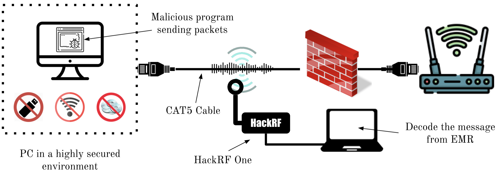

Electromagnetic Covert Channels
The unintended EM radiation of computers are not only leaking information about their internal operations. There is a possibility to exploit these radiation to make deliberate transmissions of information wirelessly to an intended receiver. The EM Covert Channel research area is all about how to purposefully generate EM radiation from computing hardware and modulate data into it. The radiation from the computer hardware acts as the carrier wave for our data. Our current focus is on how to build such EM covert channels using the radiation caused by Ethernet cables.
Read more about this research area:
Shakthi Sachintha, Nhien-An Le-Khac, Mark Scanlon, and Asanka P. Sayakkara, "Data Exfiltration through Electromagnetic Covert Channel of Wired Industrial Control Systems", Applied Sciences 13, no. 5 (2023): 2928. doi: https://doi.org/10.3390/app13052928 [PDF]